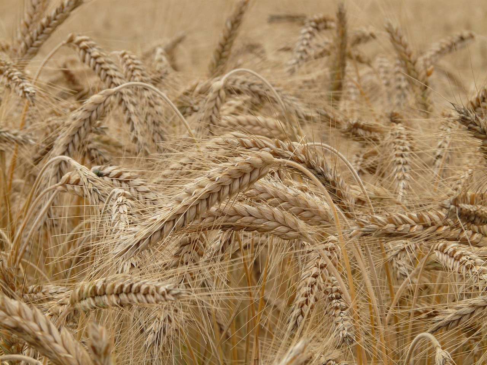
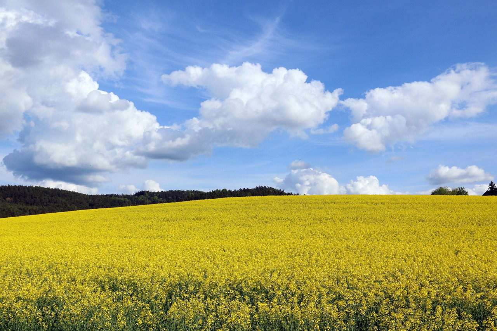
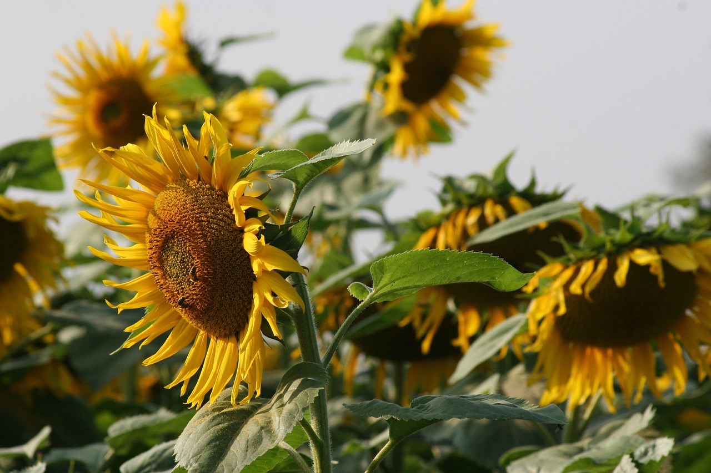
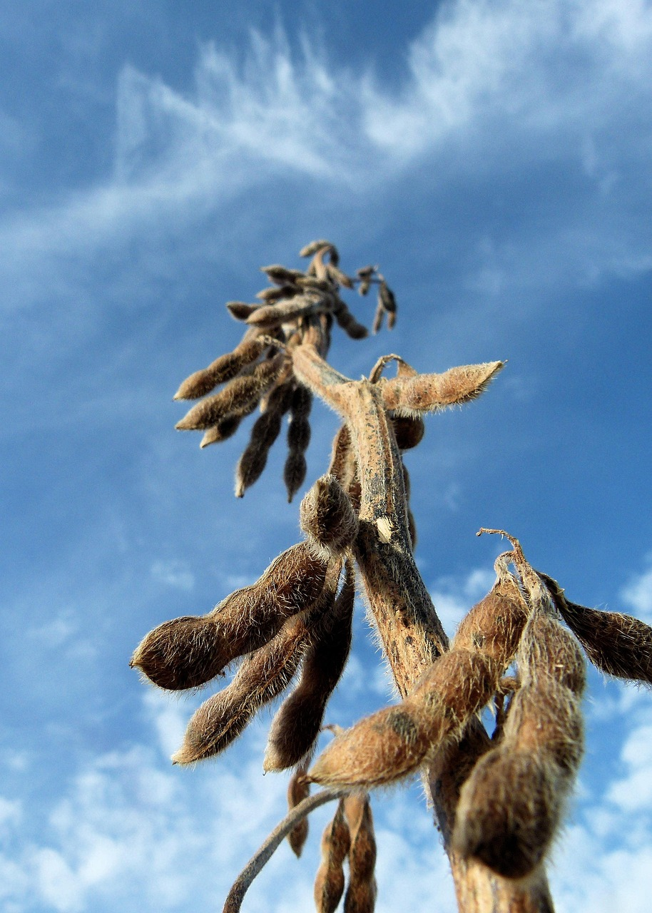

🌾 Les types de cultures agricoles
🌾 Céréales
- Blé : utilisé pour fabriquer du pain, des pâtes, etc.
- Maïs : utilisé pour l’alimentation animale, humaine, et pour l’ensilage.
- Orge : souvent utilisé pour la bière et comme fourrage.
🌻 Oléagineux
- Colza : utilisé pour produire de l’huile et du biocarburant.
- Tournesol : produit de l’huile alimentaire.
- Soja : riche en protéines, utilisé en alimentation humaine et animale.
🥕 Légumes et cultures spécialisées
- Pommes de terre : utilisées pour la consommation ou les frites.
- Betteraves : sucrières pour le sucre ou fourragères.
- Carottes, poireaux, tomates, etc. : légumes frais cultivés selon les saisons.
- Coton : est cultivé pour ses fibres textiles, pas pour l’alimentation.




